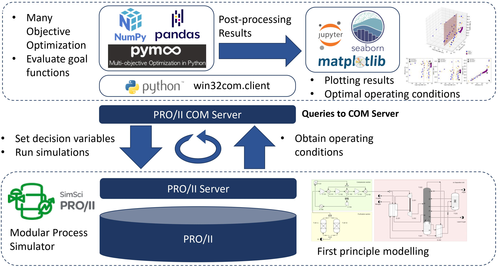

Bryan V. Piguave
PhD student, University of Notre Dame
Chemical engineer working at the intersection of machine learning, cheminformatics
and process systems engineering.
My research builds AI-driven models that predict the behaviour of single molecules and of complex chemical mixtures, combining chemical domain knowledge with modern representation learning. Before Notre Dame I worked on computer vision and retail analytics at the ESPOL INARI research lab, and on simulation-based optimization of cryogenic air separation units.
Research interests
Where my work currently sits.
Chemistry is an unusually demanding testbed for machine learning: data is scarce and expensive, molecules are structured objects rather than vectors, and predictions have to respect physical law. I am interested in how those constraints push model design, and in hybrid approaches that combine statistical learning with mechanistic and symbolic knowledge.
A second thread of my work concerns representation learning for structured transactional data and the systematic modelling and analysis of deep learning pipelines, developed with the research group I worked with at ESPOL.
Publications
Reverse chronological. See Google Scholar for citation counts and preprints.
-
2026
Organic Chemistry as a Catalyst for AI Innovation: Challenges, Methods, and Emerging Paradigms
Chemical Reviews, 126(13), 7587–7635.
A review arguing that the relationship between AI and organic chemistry is bidirectional: because chemistry cannot be solved by scale alone, its intrinsic difficulties have driven conceptual and methodological innovation in AI itself. We survey the challenges, current methods, and the hybrid paradigms — statistical learning combined with symbolic and mechanistic knowledge, human expertise and experimental feedback — that we expect to define scientific AI.
-
2025
Algebraic Expressions for Complex Deep Learning Systems Modeling and Analysis
IEEE Access, 13, 139225–139235.
We represent complex deep learning systems as algebraic expressions by decomposing them into sub-systems arranged in serial and parallel configurations. Operations on those expressions yield system-level performance metrics — inference time and accuracy — without simulating the full pipeline, demonstrated on two multi-class visual classification case studies for retail products.
-
2024
Basket2vec: Learning Retail Basket Representations From Transactional Data
IEEE Access, 12, 162392–162398.
Basket2vec learns dense retail-basket representations in a latent space that preserves item co-occurrence. Evaluated on millions of real transactions, it improves on sparse approaches by at least an order of magnitude and induces useful geometric structure, which we exploit for K-means clustering, item recommendation and generative modelling.
-
2023
Automatic Retail Dataset Creation with Multiple Sources of Information Synchronization
2023 Twelfth International Conference on Image Processing Theory, Tools and Applications (IPTA), 1–6.
A methodology that builds and continuously extends a retail image dataset by synchronizing video of items being scanned at the point of sale with the POS transactional registry. It collects hundreds of thousands of labelled images at virtually no cost, adapts to seasonal and discontinued items, and captures natural illumination, occlusion and viewpoint variation. We release the resulting RI6K++ dataset.
-
2022
Modular Framework for Simulation-Based Multi-objective Optimization of a Cryogenic Air Separation Unit
ACS Omega, 7(14), 11696–11709.
A modular framework for finding flexible optimal operating conditions for an air separation unit, formulated with three objective functions, eleven decision variables and two constraint-handling approaches.
-
2022
Automatic Brain White Matter Hyperintensities Segmentation with Swin U-Net
2022 IEEE ANDESCON, 1–6.
An automatic segmentation approach for White Matter Hyperintensities from FLAIR and corresponding T1-weighted MRI. We use the transformer-based Swin U-Net architecture and compare it against two reported CNN U-Net architectures.
-
2021
Many-Objective Simulation-Based Optimization of an Air Separation Unit
IFAC-PapersOnLine, 54(3), 522–527.
A many-objective simulation-based optimization framework that determines eleven decision variables for the operation of an air separation unit — a system whose medical-oxygen output gained particular relevance during the COVID-19 outbreak.
Experience
-
Graduate Research & Teaching Assistant
Research on AI for chemistry within a process systems engineering group, alongside teaching duties for the department.
-
Data Scientist
Computer vision for retail: dataset construction, product classification and representation learning over transactional data, using PyTorch and OpenCV.
-
Quality Analyst
Gained hands-on experience with bioprocess systems and process monitoring after completing the company’s internship programme.
-
Beer Intern
Led a project to reduce extract loss in the fermentation process.
Education
-
PhD, Chemical Engineering
AI-driven prediction of molecular and mixture behaviour.
-
MS, Data Science
Statistical learning, data engineering and applied machine learning.
-
BSc, Chemical Engineering
Graduated and continued working with Santiago Salas on simulation-based optimization, contributing the process description and the Python framework.
-
Exchange semester
Six months on a Chilean government scholarship, studying bioprocess engineering, instrumental analysis and microbiology.
Code & tools
Research code, simulation tools and teaching material. Everything is on GitHub.
-
Few-Shot Learning for Molecular Toxicity
Bootstrapped prototypical networks for toxicity prediction on the Tox21 benchmark, where labelled data per endpoint is scarce. ECFP fingerprint encoder, meta-training over nine tasks, evaluation on three held-out endpoints. PyTorch, RDKit, Mordred.
View repository → -

Air Separation Unit Optimization
The simulation and optimization code behind my two air separation papers: Python driving a PRO/II process simulation over COM, with cost models for compressors, expanders, towers and heat exchangers for CAPEX and OPEX estimation.
View repository → -
Graph Neural Networks for HIV Activity
Molecular graph classification from SMILES, with atom-level featurization covering element, degree, formal charge and orbital hybridization, and bond-level features for the molecular graph.
View repository → -
Molecular Dynamics of Argon
LAMMPS simulations of argon across thermodynamic conditions, with analysis code for the radial distribution function g(r), mean squared displacement, and diffusion constants as a function of temperature.
View repository → -
Chemical Engineering Thermodynamics Toolkit
Interactive tools for thermodynamics calculations: IAPWS-IF97 steam properties, Rankine, Brayton and refrigeration cycle analysis, and binary vapour–liquid equilibrium with the Wilson and NRTL activity coefficient models.
View repository → -
2D Ising Model
Monte Carlo simulation of the 2D Ising model with the Metropolis algorithm and periodic boundary conditions, used to study magnetization and susceptibility against temperature and lattice size, and to estimate the critical temperature by finite-size scaling.
View repository →
Also on GitHub: a McCabe–Thiele distillation solver, a thermodynamics app for the HP Prime calculator (equations of state, compressibility, psychrometrics, VLE), and statistical plotting examples for teaching.